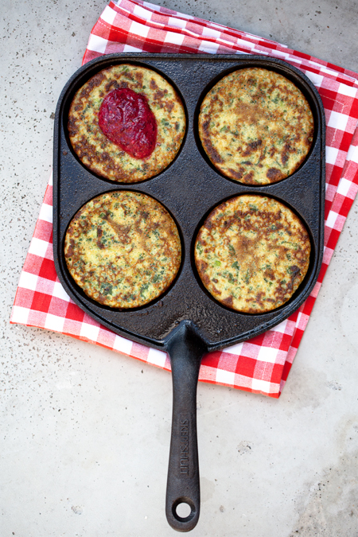

Spinach Crepes
Home

Description
A savory version of the original sweet crepes. Great way to get your kids to eat some greens. Feel free to use any fillings you like. My personal favourite is cottage cheese and honey
Ingredients
- 150g of frozen spinach
- 2 eggs
- 400ml of milk
- 250ml of flour
- 1 tsp of salt
- 1 tbsp of oil
- Butter for frying
Steps
- Whisk milk, eggs, flour and oil in a bowl
- Thaw spinach in a microwave and add in the mix
- Fry in a pan
- Enjoy with fillings of your own choosing